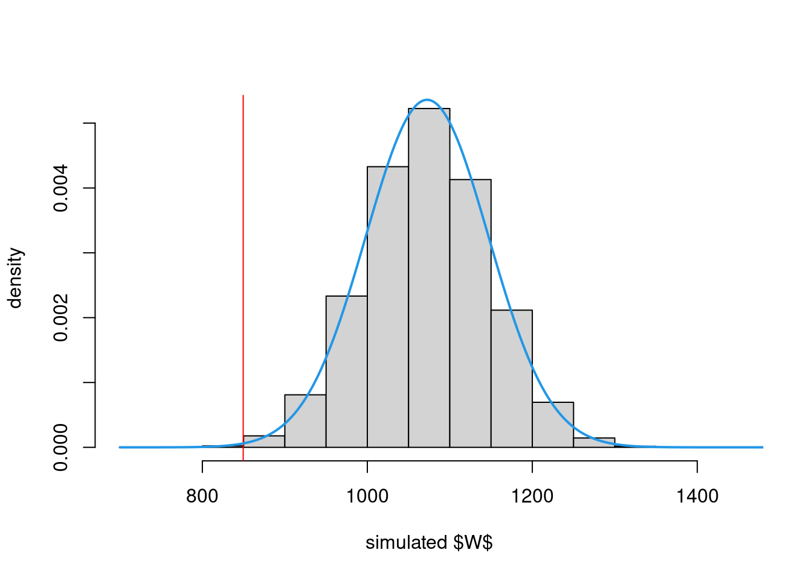

2.3 Wilcoxon rank sum test
If the data are not normal, either because the distribution is skewed or heavy-tailed, or because the sample sizes are small enough that the asymptotic distribution of the Welch test or the two-sample \(t\)-test is unreliable, we may resort to non-parametric procedures. The Wilcoxon rank-sum test is a test for a shift in distribution; the drawback is that it requires the distribution of the samples to be the same, up to a change in location. If the mean is finite, then this amounts to a change in mean under the assumption that \(F_1(x-\Delta)=F_0(x)\) for any \(x\) for \(F_0, F_1\) the distribution function in group 0 and 1, respectively.
The syntax for the test is analogous to that of the other using the formula y ~ x, namely wilcox.test(offer ~ groupe, data = tickets). You can also specify the values for the two samples with the arguments x and y.
The Wilcoxon rank sum test works with ranks, which is the relative position of the observations in the pooled sample. Intuitively, if there is no difference and both samples come from the same distribution \(F_0(x)\), the sum of the ranks in either group (relative to the number of observations in that group) should not be systematically too large or too small. Because ranks are bounded by \(n\), the test statistic is less sensitive to outliers or extremes, even if its power is not as great in small samples, the loss of power is often not meaningful and the robustness is appealing, which is why Wilcoxon rank sum test is widely used in practice. Since ranks are discrete, the distribution of the sum is tractable and we can use combinatorics to list all possibilities. For example, with eight observations split in two subgroups of equal size, the null distribution is
| 10 | 11 | 12 | 13 | 14 | 15 | 16 | 17 | 18 | 19 | 20 | 21 | 22 | 23 | 24 | 25 | 26 | |
|---|---|---|---|---|---|---|---|---|---|---|---|---|---|---|---|---|---|
| Probability (%) | 1.4 | 1.4 | 2.9 | 4.3 | 7.1 | 7.1 | 10 | 10 | 11 | 10 | 10 | 7.1 | 7.1 | 4.3 | 2.9 | 1.4 | 1.4 |
Note that the value returned by R for the Wilcoxon rank sum test is not the same as the formula covered in class; it subtracts the minimum possible rank sum, here \(m(m+1)/2\) for a first sample of size \(m\) so that the statistic is bounded below by zero, regardless of the sample size. As this is a shift by a deterministic constant, it has no impact on the asymptotic distribution.
In practice, there will often be ties (when two values are identical) and this means that the ranks are not uniquely defined (we could assign ranks at random for ties, or take the average, etc.); R will print a warning message to notify the user of the presence of ties. Formulae are adapted to deal with ties, but the software computes these automatically for us. While you will see multiple online references to the function wilcox.test, it does not return the correct \(p\)-value, point estimate or confidence interval as soon as there are ties — it is unfortunately is not doing the right thing. Outside of small samples, tabulating the null distribution is prohibitive if there are more than 50 observations in total, since the total number of possibilities explodes. In class, we saw that a normal approximation for the null distribution, i.e., the distribution of the rank sum test under the assumption that the two samples, of size \(n_1\) and \(n-n_1=n_2\), respectively, both have distribution function \(F\). The distribution can easily be approximated by simulation, by sampling uniformly integer values from 1 to \(n\) and summing the first \(n_1\). We can repeat this a large number of times and get a good approximation. If there are ties, we proceed accordingly by resampling \(n_1\) of the \(n\) ranks, without replacement. The normal approximation, whose formula was given in the slides, matches quite closely the empirical distribution of the simulated values; this is a consequence of the central limit theorem. Because of the normal approximation, we can do two-sided tests exactly as before by defining exteme values as deviation from the mean either side.
We illustrate this concept with the tickets data; bear in mind that the test is not valid here, because the data clearly do not come from the same distribution up to a shift (in particular, the variance are clearly not the same). We would normally need to test formally for equality of distribution up to a location shift, but this requires yet another test; most of the time, we will assess this hypothesis graphically.
n <- nrow(tickets)
# correct p-value, wrong confint and pe
exactRankTests::wilcox.exact(offer ~ group, data = tickets, conf.int = TRUE)##
## Exact Wilcoxon rank sum test
##
## data: offer by group
## W = 288, p-value = 0.002
## alternative hypothesis: true mu is not equal to 0
## 95 percent confidence interval:
## -22 -4
## sample estimates:
## difference in location
## -13# wrong p-value b/c of ties, correct confint and pe
wilcox.test(offer ~ group, data = tickets, conf.int = TRUE)##
## Wilcoxon rank sum test with continuity correction
##
## data: offer by group
## W = 288, p-value = 0.003
## alternative hypothesis: true location shift is not equal to 0
## 95 percent confidence interval:
## -20 -4
## sample estimates:
## difference in location
## -12# Test statistic is sum of ranks
Wteststat <- sum(rank(tickets$offer,
ties.method = "average")[tickets$group == "cash"])
# Compute the p-value through simulation
prank <- rank(tickets$offer,
ties.method = "average")
nrep <- 1e6L
W <- rep(0, nrep)
for(i in 1:nrep){
#resample the ranks
x <- sample(prank, size = 33, replace = FALSE)
W[i] <- sum(x)
}
n1 <- 33;
n2 <- 31
hist(W, freq = FALSE,
ylab = "density",
xlab = "simulated $W$",
main = "") #remove title
abline(v = Wteststat, col = "red")# add line for test stat
# Warning: this normal approximation is for
# data w/o ties, i.e., the formula presented
# in the course slides
mues <- n1*(n1+n2+1)/2 #mean of normal approx
sdes <- sqrt(n1*n2*(n1+n2+1)/12) #var of normal approx
#superimpose normal approx to empirical distribution
lines(seq(700, 1600, length = 1000L),
dnorm(x <- seq(700, 1600, length = 1000L),
mean = mues, sd = sdes), lwd = 2, col = 4)
# Simulated one-sided p-value
# by defn, proportion of samples as extreme (i.e. smaller)
mean(W < Wteststat)## [1] 0.0011## [1] 0.0014## [1] 950The value returned for the \(p\)-value by wilcox.exact would be roughly twice the one-sided \(p\)-value, in this case. The normal approximation is also convenient for obtaining confidence intervals, here [950.06, \(\infty\)).
The wilcox.test function returns the so-called Hodges–Lehmann estimator (i.e., the median of all the pairs \(Y^{(1)}_i-Y^{(2)}_j\) (\(i=1, \ldots, n_1\); \(j=1, \ldots, n_2\)). These point estimators, the associated confidence intervals and the exact coverage of the intervals (with additionally the subtleties surrounging from ties and zeros) are beyond the scope of the course, but Charles Geyer’s course notes give additional information. The following function is adapted from his code and is distributed under CC BY-SA 3.0 licence. It can be used to compute the Hodges–Lehmann estimator with the associated confidence interval, while also returning the coverage (not exactly 95% because of the discreteness of the data).
source("https://lbelzile.bitbucket.io/MATH60619A/hl_wilcox.R")
hl <- hl.wilcox(tickets$offer[tickets$group == "credit"],
tickets$offer[tickets$group == "cash"])## Wilcoxon rank sum test
## Hodges-Lehmann estimator: -12
## confidence interval: -20 -4
## achieved confidence level: 0.95Another potential nonparametric test is the Fligner–Policello test. Unlike Wilcoxon rank sum, it does not assume that the two distributions are equal under the null hypothesis, but require them to be symmetrical around their median (so the variance in each group could be different). SAS implements the test and uses the asymptotic normal approximation for p values and such like.
In R, the NSM3 package provides an implementation of the Fligner–Policello test.
fptest <- NSM3::pFligPoli(tickets$offer[tickets$group == "credit"],
tickets$offer[tickets$group == "cash"])
1-fptest$p.val## [1] 0.0014The estimated \(p\)-value for the one-sided test is \(0.0017\).